① 待机 idle标准竖条眼
墨蓝涂装（产品内使用）与原味涂装（周边 / 表情包，不进产品界面）同几何换肤。几何比例按官方立绘的像素测量标定（画布 240×210）。
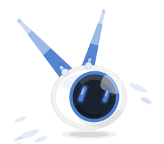
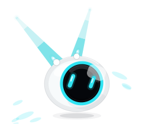
椭圆机身：cx130 cy142 rx55 ry47，右下淡影、左上柔光，不加描边（原设几乎无线条）。
大面罩：椭圆 rx34 ry35，顺时针倾 20°，5px 墨蓝描边（对应原设的亮青发光屏）。
发光竖条眼：左 7×24、右 6.5×22，右眼更高；31×23 圆角反光片压住右眼上缘。
斜向光柱耳：左耳约 48°、右耳约 16°（自竖直），耳根扎入球体轮廓内、光柱自球面探出；三段递减由实到淡（.94 / .55 / .28），根部嵌沿杆轴的深色透镜，关节盘落在光柱穿出球面的交点上。
外挂小圆点：原设此处是青色圆点，诺瓦换成朱砂「诺」印——位置对应，身份不同。
飞溅碎片：左下 4 片 + 右侧 2 片，淡墨蓝两档。
9 态体系对应 9 个真实产品场景，全部已落地并接入产品界面。
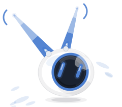
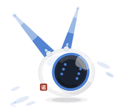
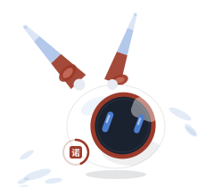
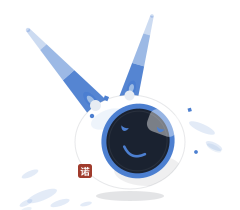
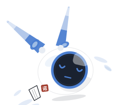
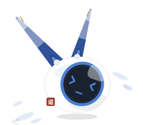
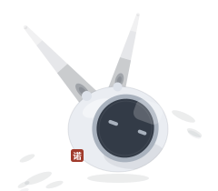
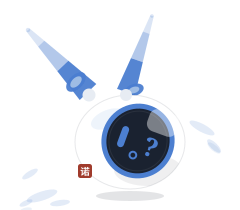
脸形头像（透明底 + 深色面罩 + 主色竖眼 + 双耳尖）与 16px 应用图标。
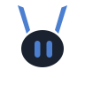
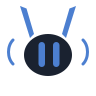
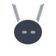
以「替换既有字块」的方式最小侵入，不改布局与网格。
墨蓝涂装全部色值取自 assets/css/app.css；朱砂只用于「正在进行」语义。
| 文件 | 内容 | 用处 |
|---|---|---|
| assets/img/mascot-v4.svg | 主立绘 · 墨蓝涂装 240×210 | 欢迎语主形象、对外展示 |
| assets/img/mascot-v4-classic.svg | 主立绘 · 原味涂装 | 表情包 / 周边，不进产品 UI |
| assets/img/mascot-v4-listen.svg | ② 聆听态 | 输入聚焦 |
| assets/img/mascot-v4-calc.svg | ③ 计算中 | 对话「处理中」等待 |
| assets/img/mascot-v4-focus.svg | ④ 专注态 | 计时进行中 |
| assets/img/mascot-v4-done.svg | ⑤ 达成 | 任务完成 |
| assets/img/mascot-v4-rescue.svg | ⑥ 挽救 | 中断横幅 |
| assets/img/mascot-v4-warn.svg | ⑦ 提醒 | 偏差归因 / 负载预警 |
| assets/img/mascot-v4-offline.svg | ⑧ 离线 | 无后端本地兜底 |
| assets/img/mascot-v4-unknown.svg | ⑨ 兜底 | 关键词未命中 |
| assets/img/avatar-v4.svg | 脸形头像 96×96 | .seal / .avatar |
| assets/img/avatar-v4-listen.svg | 脸形头像 · 聆听态 | 输入聚焦 |
| assets/img/avatar-v4-offline.svg | 脸形头像 · 离线 | 无后端 |
| assets/img/favicon-v4.svg | 16px 最小形 | 标签页图标 |
生成：node scripts/build-mascot-v4.js → 产物写入 assets/img/（零依赖，Node 22+）
历史归档：v1 方盒 / v2 球形细棒耳在 design-preview/mascot/；v3 兔子耳在 design-preview/mascot/archive-v3/
素材保持静态，动效只加在产品侧 img 元素上（整图位移 / 缩放 / 旋转，无发光、无渐变）；受 data-motion 与 prefers-reduced-motion 双闸约束。常驻循环只有漂浮 / 呼吸两类，状态反应均为一次性动效。点「重播」再看一次。
实现位置：assets/css/app.css「诺瓦灵动」区块（keyframes 同源）；挽救横幅另接慢速漂浮。